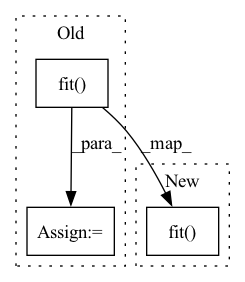

Pattern ID :3291
Before Change
Checks if training the provided model updates its weights.
initial_values = torch.tensor(
[torch.sum(torch.abs(x)) for x in model.parameters()])
result = trainer.fit( model)
post_train_values = torch.tensor(
[torch.sum(torch.abs(x)) for x in model.parameters()])
assert result == 1, "trainer failed"
// Check that the model is actually changed post-training.After Change
Checks if training the provided model updates its weights.
initial_values = torch.tensor(
[torch.sum(torch.abs(x)) for x in model.parameters()])
trainer.fit( model)
post_train_values = torch.tensor(
[torch.sum(torch.abs(x)) for x in model.parameters()])
assert trainer.state.finished, f"Trainer failed with {trainer.state}"
// Check that the model is actually changed post-training.In pattern: SUPERPATTERN
Frequency: 27
Non-data size: 3
Instances Fragment ID: 12664001
Project Name: ray-project/ray_lightning_accelerators
Commit Name: 41e34912ece0238403ca5e7ee865ed875c0cfbc2
Time: 2021-08-09
Author: amogkam@users.noreply.github.com
File Name: ray_lightning/tests/utils.py
M Class Name: AnonimousClass
N Class Name: AnonimousClass
M Method Name: train_test(2)
N Method Name: train_test(2)
M Parent Class:
N Parent Class:
M File Name: ray_lightning/tests/utils.py
N File Name: ray_lightning/tests/utils.py
M Start Line: 176
M End Line: 176
N Start Line: 178
N End Line: 178
Before Change
budget -= time.time() - start_time
if val_loss < best_val_loss and budget > budget_per_train:
estimator.cleanup()
train_time_full = estimator.fit( X_train_all, y_train_all, budget)
train_time += train_time_full
return val_loss, train_loss, train_time
After Change
budget -= time.time() - start_time
if val_loss < best_val_loss and budget > budget_per_train:
estimator.cleanup()
estimator.fit( X_train_all, y_train_all, budget, **fit_kwargs)
return val_loss, train_loss, train_time
Fragment ID: 12664000
Project Name: microsoft/flaml
Commit Name: 776aa551896353f3ff34c692b0f9d2e041664c78
Time: 2021-02-05
Author: Sonicive@hotmail.com
File Name: flaml/ml.py
M Class Name: AnonimousClass
N Class Name: AnonimousClass
M Method Name: evaluate_model_CV(10)
N Method Name: evaluate_model_CV(9)
M Parent Class:
N Parent Class:
M File Name: flaml/ml.py
N File Name: flaml/ml.py
M Start Line: 151
M End Line: 203
N Start Line: 166
N End Line: 231
Before Change
learning_rate=LR,
)
metrics_df = m.fit( df, freq="5min")
future = m.make_future_dataframe(df, periods=6, n_historic_predictions=3 * 24 * 12)
forecast = m.predict(future)
m.highlight_nth_step_ahead_of_each_forecast(m.n_forecasts)
After Change
learning_rate=LR,
)
m.fit( df, freq="5min")
future = m.make_future_dataframe(df, periods=6, n_historic_predictions=3 * 24 * 12)
m.predict(future)
m.highlight_nth_step_ahead_of_each_forecast(m.n_forecasts)
Fragment ID: 12664002
Project Name: ourownstory/neural_prophet
Commit Name: 24fd354d6ccdd16cf29a67da3c0c463d3933ff43
Time: 2023-05-16
Author: noxan@users.noreply.github.com
File Name: tests/test_uncertainty.py
M Class Name: AnonimousClass
N Class Name: AnonimousClass
M Method Name: test_uncertainty_estimation_yosemite_temps(0)
N Method Name: test_uncertainty_estimation_yosemite_temps(0)
M Parent Class:
N Parent Class:
M File Name: tests/test_uncertainty.py
N File Name: tests/test_uncertainty.py
M Start Line: 106
M End Line: 118
N Start Line: 106
N End Line: 118
Before Change
random_state=2
)
res = opt.fit()
return
def test_dl4seq_grid(self):
run_dl4seq("grid")After Change
random_state=2
)
opt.fit()
return
def test_dl4seq_grid(self):
run_dl4seq("grid") Fragment ID: 12664007
Project Name: atrcheema/ai4water
Commit Name: a3b17d8e84a1484fc4291b6292c618d12a350621
Time: 2021-01-05
Author: ather_abbas786@yahoo.com
File Name: tests/test_hyper_opt.py
M Class Name: TestHyperOpt
N Class Name: TestHyperOpt
M Method Name: test_dl4seq_bayes(1)
N Method Name: test_dl4seq_bayes(1)
M Parent Class: unittest.TestCase
N Parent Class: unittest.TestCase
M File Name: tests/test_hyper_opt.py
N File Name: tests/test_hyper_opt.py
M Start Line: 230
M End Line: 247
N Start Line: 247
N End Line: 247
Before Change
batch_size=BATCH_SIZE,
learning_rate=LR,
)
metrics_df = m.fit( df, freq="MS")
future = m.make_future_dataframe(df, periods=50, n_historic_predictions=len(df))
forecast = m.predict(future)
After Change
batch_size=BATCH_SIZE,
learning_rate=LR,
)
m.fit( df, freq="MS")
future = m.make_future_dataframe(df, periods=50, n_historic_predictions=len(df))
m.predict(future)
Fragment ID: 12663974
Project Name: ourownstory/neural_prophet
Commit Name: 24fd354d6ccdd16cf29a67da3c0c463d3933ff43
Time: 2023-05-16
Author: noxan@users.noreply.github.com
File Name: tests/test_uncertainty.py
M Class Name: AnonimousClass
N Class Name: AnonimousClass
M Method Name: test_uncertainty_estimation_air_travel(0)
N Method Name: test_uncertainty_estimation_air_travel(0)
M Parent Class:
N Parent Class:
M File Name: tests/test_uncertainty.py
N File Name: tests/test_uncertainty.py
M Start Line: 124
M End Line: 135
N Start Line: 124
N End Line: 135
Before Change
x = np.random.random((batch_size * 10, lookback, len(inputs)))
y = np.random.random((batch_size * 10, len(outputs)))
history = model.fit(x=x, y=y)
return
def test_example3(self):
model = Model(After Change
x = np.random.random((batch_size * 10, lookback, len(inputs)))
y = np.random.random((batch_size * 10, len(outputs)))
model.fit(x=x, y=y)
return
def test_example3(self):
from ai4water import Model Fragment ID: 12663976
Project Name: atrcheema/ai4water
Commit Name: ebb30cb4829cac0eea2397dbc35978a6dc2fc9e5
Time: 2023-02-08
Author: ather_abbas786@yahoo.com
File Name: tests/test_front_page_examples.py
M Class Name: TestFrontPage
N Class Name: TestFrontPage
M Method Name: test_example2(1)
N Method Name: test_example2(1)
M Parent Class: unittest.TestCase
N Parent Class: unittest.TestCase
M File Name: tests/test_front_page_examples.py
N File Name: tests/test_front_page_examples.py
M Start Line: 47
M End Line: 63
N Start Line: 53
N End Line: 68
Before Change
train_df, test_df = m.split_df(df, freq="MS", valid_p=0.2)
train_df, cal_df = m.split_df(train_df, freq="MS", valid_p=0.15)
metrics_df = m.fit( train_df, freq="MS")
alpha = (0.03, 0.07)
decompose = False
future = m.make_future_dataframe(After Change
train_df, test_df = m.split_df(df, freq="MS", valid_p=0.2)
train_df, cal_df = m.split_df(train_df, freq="MS", valid_p=0.15)
m.fit( train_df, freq="MS")
alpha = (0.03, 0.07)
decompose = False
future = m.make_future_dataframe( Fragment ID: 12663979
Project Name: ourownstory/neural_prophet
Commit Name: 24fd354d6ccdd16cf29a67da3c0c463d3933ff43
Time: 2023-05-16
Author: noxan@users.noreply.github.com
File Name: tests/test_uncertainty.py
M Class Name: AnonimousClass
N Class Name: AnonimousClass
M Method Name: test_asymmetrical_quantiles(0)
N Method Name: test_asymmetrical_quantiles(0)
M Parent Class:
N Parent Class:
M File Name: tests/test_uncertainty.py
N File Name: tests/test_uncertainty.py
M Start Line: 213
M End Line: 243
N Start Line: 213
N End Line: 243
Before Change
train_df, test_df = m.split_df(df, freq="MS", valid_p=0.2)
train_df, cal_df = m.split_df(train_df, freq="MS", valid_p=0.15)
metrics_df = m.fit( train_df, freq="MS")
alpha = 0.1
decompose = False
for method in ["naive", "cqr"]: // Naive and CQR SCP methodsAfter Change
train_df, test_df = m.split_df(df, freq="MS", valid_p=0.2)
train_df, cal_df = m.split_df(train_df, freq="MS", valid_p=0.15)
m.fit( train_df, freq="MS")
alpha = 0.1
decompose = False
for method in ["naive", "cqr"]: // Naive and CQR SCP methods Fragment ID: 12663980
Project Name: ourownstory/neural_prophet
Commit Name: 24fd354d6ccdd16cf29a67da3c0c463d3933ff43
Time: 2023-05-16
Author: noxan@users.noreply.github.com
File Name: tests/test_uncertainty.py
M Class Name: AnonimousClass
N Class Name: AnonimousClass
M Method Name: test_split_conformal_prediction(0)
N Method Name: test_split_conformal_prediction(0)
M Parent Class:
N Parent Class:
M File Name: tests/test_uncertainty.py
N File Name: tests/test_uncertainty.py
M Start Line: 175
M End Line: 194
N Start Line: 175
N End Line: 194
Before Change
eval_metric, obj, labels=None, budget=None, train_loss=False, fit_kwargs={}
):
start = time.time()
train_time = estimator.fit( X_train, y_train, budget, **fit_kwargs)
if isinstance(eval_metric, str):
pred_start = time.time()
test_pred_y = get_y_pred(estimator, X_test, eval_metric, obj)
After Change
eval_metric, obj, labels=None, budget=None, log_training_metric=False, fit_kwargs={}
):
start = time.time()
estimator.fit( X_train, y_train, budget, **fit_kwargs)
if isinstance(eval_metric, str):
pred_start = time.time()
test_pred_y = get_y_pred(estimator, X_test, eval_metric, obj)
Fragment ID: 12664017
Project Name: microsoft/flaml
Commit Name: a229a6112a551ce84728f6c75b8c26320930cc15
Time: 2021-08-23
Author: qw2ky@virginia.edu
File Name: flaml/ml.py
M Class Name: AnonimousClass
N Class Name: AnonimousClass
M Method Name: get_test_loss(12)
N Method Name: get_test_loss(12)
M Parent Class:
N Parent Class:
M File Name: flaml/ml.py
N File Name: flaml/ml.py
M Start Line: 147
M End Line: 154
N Start Line: 150
N End Line: 163
Before Change
y_train = floatify_series(y_train)
y_test = floatify_series(y_test)
domain_classifier = domain_classifier.fit( x_train, y_train)
y_test.name = "belongs_to_test"
domain_test_dataset = Dataset(pd.concat([x_test.reset_index(drop=True), y_test.reset_index(drop=True)], axis=1),
cat_features=cat_features, label="belongs_to_test")After Change
domain_classifier = HistGradientBoostingClassifier(max_depth=2, max_iter=10, random_state=random_state,
categorical_features=[x in cat_features for x in
domain_class_df.columns])
domain_classifier.fit( x_train, y_train)
y_test.name = "belongs_to_test"
domain_test_dataset = Dataset(pd.concat([x_test.reset_index(drop=True), y_test.reset_index(drop=True)], axis=1),
cat_features=cat_features, label="belongs_to_test") Fragment ID: 12664016
Project Name: deepchecks/deepchecks
Commit Name: 44add128afe3dda19502ebd7ac25c9134ef42cbc
Time: 2022-08-01
Author: 67195469+Nadav-Barak@users.noreply.github.com
File Name: deepchecks/core/check_utils/whole_dataset_drift_utils.py
M Class Name: AnonimousClass
N Class Name: AnonimousClass
M Method Name: run_whole_dataset_drift(13)
N Method Name: run_whole_dataset_drift(13)
M Parent Class:
N Parent Class:
M File Name: deepchecks/core/check_utils/whole_dataset_drift_utils.py
N File Name: deepchecks/core/check_utils/whole_dataset_drift_utils.py
M Start Line: 47
M End Line: 69
N Start Line: 43
N End Line: 61
Before Change
gpus=0, fast_dev_run=True, max_epochs=1, default_root_dir=tmpdir, max_steps=3
)
results = trainer.fit( model, datamodule)
assert results == 1
After Change
gpus=0, fast_dev_run=True, max_epochs=1, default_root_dir=tmpdir, max_steps=3
)
trainer.fit( model, datamodule)
loss = trainer.progress_bar_dict["loss"]
assert float(loss) > 0
Fragment ID: 12664023
Project Name: pytorchlightning/pytorch-lightning-bolts
Commit Name: 978fa1cf2e56056c12b51193613e0f1388fcb0e0
Time: 2020-11-02
Author: ananya@pytorchlightning.ai
File Name: tests/models/self_supervised/test_models.py
M Class Name: AnonimousClass
N Class Name: AnonimousClass
M Method Name: test_swav(1)
N Method Name: test_swav(1)
M Parent Class:
N Parent Class:
M File Name: tests/models/self_supervised/test_models.py
N File Name: tests/models/self_supervised/test_models.py
M Start Line: 97
M End Line: 135
N Start Line: 97
N End Line: 137
Before Change
random_state=2
)
res = opt.fit()
return
def test_dl4seq_bayes(self):After Change
random_state=2
)
opt.fit()
return
def test_dl4seq_bayes(self):
dims = [Integer(low=1000, high=2000, name="n_estimators"), Fragment ID: 12663959
Project Name: atrcheema/ai4water
Commit Name: 90d0278853e4c9684425d65c2f33dd0c47aa4d4b
Time: 2021-03-11
Author: ather_abbas786@yahoo.com
File Name: tests/test_hyper_opt.py
M Class Name: TestHyperOpt
N Class Name: TestHyperOpt
M Method Name: test_named_custom_bayes(1)
N Method Name: test_named_custom_bayes(1)
M Parent Class: unittest.TestCase
N Parent Class: unittest.TestCase
M File Name: tests/test_hyper_opt.py
N File Name: tests/test_hyper_opt.py
M Start Line: 268
M End Line: 268
N Start Line: 260
N End Line: 260
Before Change
gpus=None,
)
result = trainer.fit( model, datamodule=dm)
assert result == 1
@torch.no_grad()After Change
gpus=None,
)
trainer.fit( model, datamodule=dm)
@torch.no_grad()
def test_encoder(): Fragment ID: 12664022
Project Name: pytorchlightning/lightning-bolts
Commit Name: b236f21a2ac3e89fc6d3e75eecd99c2829d3c240
Time: 2021-05-11
Author: nitta@akihironitta.com
File Name: tests/models/test_autoencoders.py
M Class Name: AnonimousClass
N Class Name: AnonimousClass
M Method Name: test_ae(3)
N Method Name: test_ae(3)
M Parent Class:
N Parent Class:
M File Name: tests/models/test_autoencoders.py
N File Name: tests/models/test_autoencoders.py
M Start Line: 31
M End Line: 39
N Start Line: 30
N End Line: 37
Before Change
model = ImageDetector(num_classes=2, model="fasterrcnn_resnet50_fpn")
ds = DummyDetectionDataset((3, 224, 224), 1, 2, 10)
dl = DataLoader(ds, collate_fn=collate_fn)
trainer = pl.Trainer(fast_dev_run=True, default_root_dir=tmpdir).fit( model, dl)
After Change
model = ImageDetector(num_classes=2, model="fasterrcnn_resnet50_fpn")
ds = DummyDetectionDataset((3, 224, 224), 1, 2, 10)
dl = DataLoader(ds, collate_fn=collate_fn)
pl.Trainer(fast_dev_run=True, default_root_dir=tmpdir).fit( model, dl)
Fragment ID: 12664025
Project Name: lightning-ai/lightning-flash
Commit Name: 90d7985ae3ed30ad3bcf13f7b5af26cfcf6d09ef
Time: 2021-01-28
Author: jirka.borovec@seznam.cz
File Name: tests/vision/models/test_detection.py
M Class Name: AnonimousClass
N Class Name: AnonimousClass
M Method Name: test_training(1)
N Method Name: test_training(1)
M Parent Class:
N Parent Class:
M File Name: tests/vision/models/test_detection.py
N File Name: tests/vision/models/test_detection.py
M Start Line: 53
M End Line: 56
N Start Line: 53
N End Line: 56
Before Change
self.fitted = False
def compute(self):
self.data = self.scaler.fit() .mean_ // TODO: return dataarray if if data is dataarray
self.fitted = True
// // - Option to add time group dimensions to mean_, std_
After Change
self.fitted = False
def compute(self):
self.scaler.fit()
self.fitted = True
self.mean = self.scaler.mean_
self.variability = self.scaler.std_
Fragment ID: 12663993
Project Name: deepsphere/deepsphere-weather
Commit Name: 6860b67c2eb6f7da022fa0e15b1a028ba55e85d1
Time: 2021-02-16
Author: gionata.ghiggi@gmail.com
File Name: modules/xscaler.py
M Class Name: Climatology
N Class Name: Climatology
M Method Name: compute(1)
N Method Name: compute(1)
M Parent Class:
N Parent Class:
M File Name: modules/xscaler.py
N File Name: modules/xscaler.py
M Start Line: 1083
M End Line: 1083
N Start Line: 1104
N End Line: 1107
Before Change
batch_size=BATCH_SIZE,
learning_rate=LR,
)
metrics_df = m.fit( df, freq="MS")
future = m.make_future_dataframe(df, periods=50, n_historic_predictions=len(df))
forecast = m.predict(future)
After Change
batch_size=BATCH_SIZE,
learning_rate=LR,
)
m.fit( df, freq="MS")
future = m.make_future_dataframe(df, periods=50, n_historic_predictions=len(df))
m.predict(future)
Fragment ID: 12664024
Project Name: ourownstory/neural_prophet
Commit Name: 24fd354d6ccdd16cf29a67da3c0c463d3933ff43
Time: 2023-05-16
Author: noxan@users.noreply.github.com
File Name: tests/test_uncertainty.py
M Class Name: AnonimousClass
N Class Name: AnonimousClass
M Method Name: test_uncertainty_estimation_multiple_quantiles(0)
N Method Name: test_uncertainty_estimation_multiple_quantiles(0)
M Parent Class:
N Parent Class:
M File Name: tests/test_uncertainty.py
N File Name: tests/test_uncertainty.py
M Start Line: 140
M End Line: 158
N Start Line: 140
N End Line: 158
Before Change
gpus=None,
)
result = trainer.fit( model, datamodule=dm)
assert result == 1
@pytest.mark.parametrize("dm_cls", [pytest.param(CIFAR10DataModule, id="cifar10")])After Change
gpus=None,
)
trainer.fit( model, datamodule=dm)
@pytest.mark.parametrize("dm_cls", [pytest.param(CIFAR10DataModule, id="cifar10")])
def test_ae(tmpdir, datadir, dm_cls): Fragment ID: 12664026
Project Name: pytorchlightning/lightning-bolts
Commit Name: b236f21a2ac3e89fc6d3e75eecd99c2829d3c240
Time: 2021-05-11
Author: nitta@akihironitta.com
File Name: tests/models/test_autoencoders.py
M Class Name: AnonimousClass
N Class Name: AnonimousClass
M Method Name: test_vae(3)
N Method Name: test_vae(3)
M Parent Class:
N Parent Class:
M File Name: tests/models/test_autoencoders.py
N File Name: tests/models/test_autoencoders.py
M Start Line: 15
M End Line: 23
N Start Line: 15
N End Line: 22
Before Change
verbosity=0
)
hist = model.fit(indices=indices)
return model.predict(indices=model.test_indices if indices else None)
class test_MultiInputModels(unittest.TestCase):
def test_with_no_transformation(self):After Change
verbosity=0
)
model.fit(indices=indices)
return model.predict(indices=model.test_indices if indices else None)
class test_MultiInputModels(unittest.TestCase):
Fragment ID: 12664029
Project Name: atrcheema/ai4water
Commit Name: 2794c1b28bdfaf7f9fc11c54498897df9ecde41b
Time: 2021-03-11
Author: ather_abbas786@yahoo.com
File Name: tests/test_models.py
M Class Name: AnonimousClass
N Class Name: AnonimousClass
M Method Name: build_and_run(3)
N Method Name: build_and_run(3)
M Parent Class:
N Parent Class:
M File Name: tests/test_models.py
N File Name: tests/test_models.py
M Start Line: 75
M End Line: 75
N Start Line: 73
N End Line: 73
Before Change
// user defined data
x,y = model.training_data(data=data)
_ = model.fit(x=x,y=y, epochs=1)
_ = model.predict(x=x,y=y)
return pred_y
After Change
// user defined data
x,y = model.training_data(data=data)
model.fit(x=x,y=y, epochs=1)
model.fit_on_all_training_data(data=data, epochs=1)
_ = model.predict(x=x,y=y)
model.predict_on_validation_data(data=data)
model.predict_on_all_data(data=data) Fragment ID: 12663998
Project Name: atrcheema/dl4seq
Commit Name: c2334f70b7ee75190636bf81736871d9f7fce2ff
Time: 2022-05-20
Author: ather_abbas786@yahoo.com
File Name: tests/test_models/test_without_eager.py
M Class Name: AnonimousClass
N Class Name: AnonimousClass
M Method Name: make_and_run(6)
N Method Name: make_and_run(6)
M Parent Class:
N Parent Class:
M File Name: tests/test_models/test_without_eager.py
N File Name: tests/test_models/test_without_eager.py
M Start Line: 45
M End Line: 45
N Start Line: 27
N End Line: 50